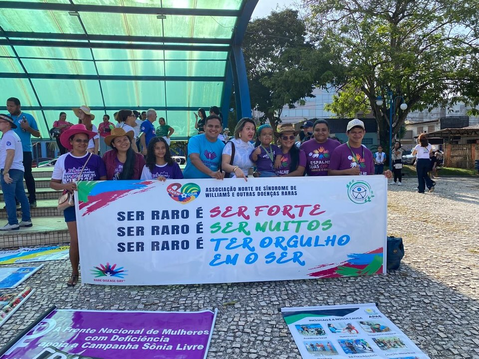
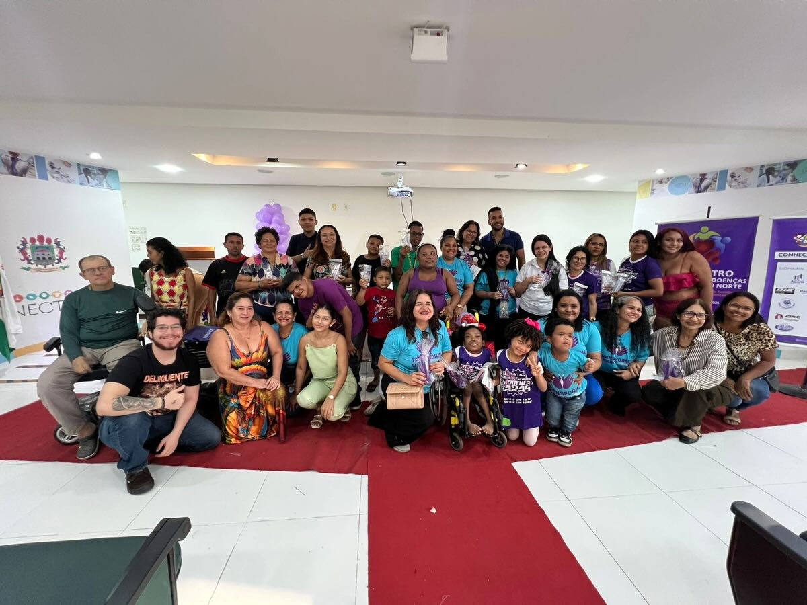

Conheça o Instituto Raros do Norte
Acolhimento, informação e defesa de direitos na região Norte.


Quem Somos
O Instituto Raros do Norte iniciou sua trajetória como associação em 2014, a partir da iniciativa de Lígia Lopes, assistente social e mãe de um filho com síndrome de Williams-Beuren. Motivada por sua experiência com os desafios enfrentados pelas famílias de pessoas com doenças raras, Lígia transformou sua vivência em uma trajetória de acolhimento, mobilização e defesa de direitos. Atualmente, o Instituto atua como uma organização não governamental (ONG), dedicada ao apoio às pessoas com doenças raras e suas famílias, promovendo acolhimento, orientação, conscientização e articulação com profissionais, instituições e serviços de saúde. Nossa atuação também envolve a defesa da inclusão, do acesso à saúde e do fortalecimento das políticas públicas voltadas às pessoas com doenças raras, especialmente na Região Norte. Entre nossas iniciativas estão a aproximação entre pacientes e serviços de saúde, a construção de parcerias e a mobilização em favor de maior visibilidade e reconhecimento das necessidades dessa população. Acreditamos que conhecer é o primeiro passo para acolher, e que o cuidado se fortalece quando famílias, profissionais e sociedade caminham juntos.
Nossos Pilares
Nossa Missão
Promover o acolhimento, a orientação e a defesa dos direitos das pessoas com doenças raras e suas famílias, contribuindo para a inclusão social, a conscientização da sociedade e a ampliação do acesso à saúde, especialmente na Região Norte do Brasil.
Nossa Visão
Ser uma instituição de referência na Região Norte na defesa dos direitos das pessoas com doenças raras, reconhecida pelo acolhimento às famílias, pela promoção da inclusão e pela articulação de iniciativas que fortaleçam o acesso à saúde e às políticas públicas.
Nossos Objetivos
O Instituto Raros do Norte é uma organização sem fins lucrativos dedicada a acolher, orientar e apoiar pessoas com doenças e síndromes raras, bem como seus familiares, promovendo a inclusão social, a conscientização e a defesa de seus direitos. Busca contribuir para a ampliação do acesso aos serviços de saúde, fortalecer parcerias com profissionais e instituições e incentivar o desenvolvimento de políticas públicas voltadas às necessidades dessa população.